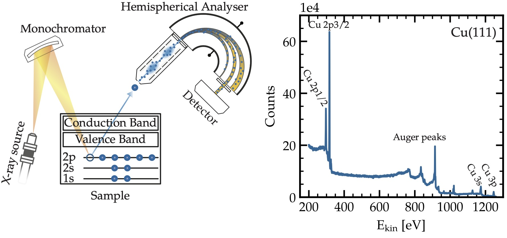
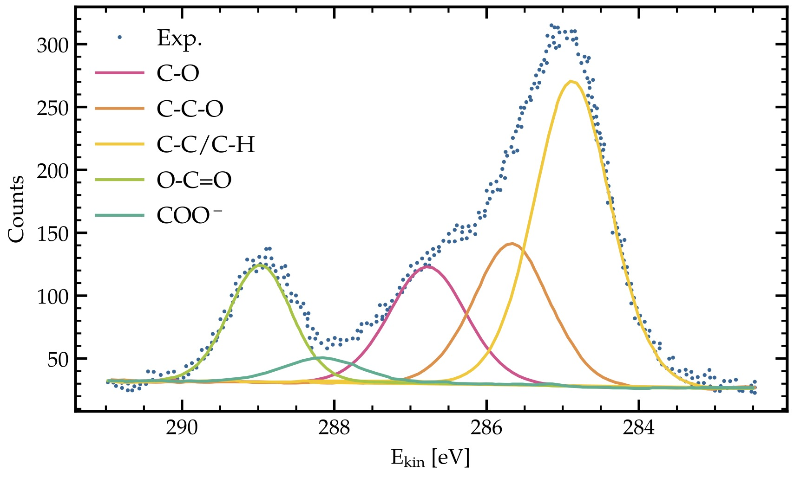
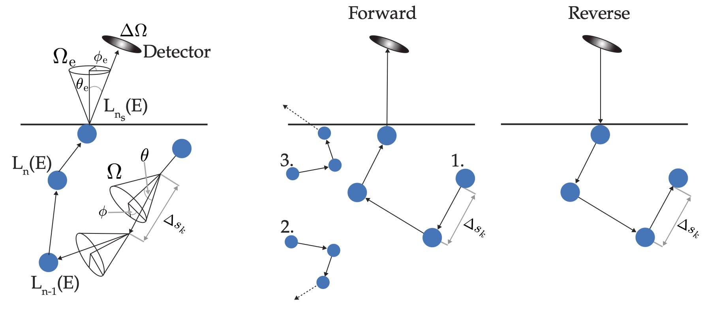

Overview
The Simulation of Electron Spectra for Surface Analysis is a 25-year-old simulation software distributed as the NIST Standard Reference Database 100. Originally, it was developed by my PhD supervisor Professor Wolfgang Werner together with Dr. Werner Smekal and Dr. Cedric J. Powell from NIST. As part of my PhD at the Institute of Applied Physics at TU Wien, I led the further development of the software, implementing a Python interface, high-performance computing code, updated databases and NeXus-based data output.
Underlying Physics
I developed the key functionalities in the software related to X-ray photoelectron spectroscopy (XPS), which is a surface-sensitive materials characterisation technique that allows probing the first few nanometres of a material and study its interaction with the environment. It is an indispensable analytical technique that is used in an industrial and research context from semiconductor industry and battery research to drug development and palaeontology. The underlying physics is based on the photoelectric effect (Albert Einstein's Nobel Prize in 1921) where the incoming X-ray leads to the ejection of a so-called photoelectron (and a cascade of Auger-Meitner electrons). Based on the binding energy of the electron in the solid we can report a spectrum by measuring the kinetic energy of the excited core-level electron (see Figure 1). Each peak in the spectrum corresponds to photoelectrons from a specific core level in the electronic structure of the solid. Using such a spectrum it is possible to quantify among others layer thicknesses, chemical states or surface contaminations. In Figure 2 an example of individual chemical states in the carbon 1s peak of PMMA (Pletincx et al. (2017)) is shown, allowing us to quantify the chemical composition of the compound.
Simulation Procedure
At the core of the software sits the partial intensity approach pioneered by Wolfgang Werner (Werner (1995), Werner (2023)). This approach enables an efficient calculation of the spectral background comprised of inelastically scattered electrons. To apply a Monte Carlo simulation step, three key assumptions need to be introduced: (i) the correlation relaxation principle, which states that the inter-particle correlations may be neglected whenever the correlation length is small compared to the mean free path. This is satisfied for amorphous solids in the medium-energy regime; (ii) the binary encounter approximation is invoked for elastic scattering, whereby collisions involving three or more particles simultaneously are disregarded; (iii) within the quasi-elastic energy regime, only a small number of inelastic collisions occur over path lengths short enough for the inelastic mean free path making the energy loss process effectively independent of the incident electron energy. Under these three conditions the transport equation governing the particle flux density takes the form of the linearised Boltzmann equation. Based on these assumptions the total particle flux density (the measured spectrum) can then be expressed as a sum of correlated sequences of scattering events that collectively give rise to both angular deflections (elastic scattering) and energy losses (inelastic scattering). The spectrum can then be interpreted as a sum of the energy distribution after n-fold scattering events multiplied with a weighting factor that describes the number of n-fold inelastically scattered particles which are the partial intensities. The Monte Carlo simulation is used in the calculation of the underlying integrals of the partial intensities where a random number generator produces a distribution of step lengths between scattering events. For computational efficiency, the reciprocity theorem introduced by Case and Zweifel (1967) for one-speed particle transport is invoked, which states that source and detector can be interchanged provided that the propagation directions are simultaneously reversed. A schematic detailing the simulation principle is shown in Figure 3, where $s_k$ is the sampled step length, $L_n(E)$ the energy loss function, $\Omega$ the angular components of the elastic scattering event, and $\Delta \Omega$ the solid angle of the detector.
Application
In the following, a selected list of possible applications of SESSA to quantitative XPS is given:
- Surface layer thickness quantification (Baer et al. (2016))
- Sample structure prediction from XPS data using Bayesian estimation (Shinotsuka et al. (2022))
- Training a Transformer-based neural network for automated high-throughput quantitative XPS (Simperl and Werner (2025))
- Data-driven surrogate model for XPS (Yoneda et al. (2026))
- Analysis of the electrical double layer using electrochemical X-ray photoelectron spectroscopy (Louisia et al. (2026))
- Attenuation length measurements over a wide energy range using the overlayer method (Werner and Powell (2021))
- Quantitative analysis of surface impurities on multilayered materials (Werner and Powell (2021))
- Analysis of ionic liquids for determination of the analyser transmission function (Werner and Powell (2021))
- Simulation of the inelastic background for hard X-rays with and without polarisation (Werner and Powell (2021))
- Analysis of core-shell nanoparticles (Werner and Powell (2021))
Gallery


